Getting Started with VossII and fl
This tutorial is an introduction to the VossII software suite, and the “fl” programming language used to interface with it. The tutorial assumes that you are familiar with at least one other programming language, and after completing it you will be able to read and write simple programs in fl, as well as know where to look for more in-depth information on any particular fl-related topic.
What is fl?
VossII is a software suite for describing visualising, analysing and proving properties about integrated circuits.
Similar to many theorem provers, the VossII command language for the verification system is a general purpose programming language. In fact, the fl language shows a strong degree of influence from the version of ML used in the HOL-88 system. However, there are several differences; many syntactic but some more fundamental.
In particular, the functional language used in VossII has lazy evaluation semantics. In other words, no expression is evaluated until it is absolutely needed. Similarly, no expression is evaluated more than once. Another difference is that Boolean functions are first-class objects and can be created, evaluated, compared and printed out. For efficiency reasons these Boolean functions are represented as ordered binary decision diagrams.
Running fl
If the VosSII system installed on your system and available on your $PATH, simply run the command fl in a terminal window to get a stand-alone version of fl.

The fl program accepts a number of arguments. More specifically:
-f FILE: start fl by first reading in the content of the file namedFILE.-I DIR: Set the default search directory toDIR.-noXor--noX: do not use the graphical (X-windows) interface. Useful when running batch oriented jobs. Note that any calls to graphics primitives will fail with a runtime exception when fl is run in the-noXmode.-use_stdinor--use_stdin: read input fromstdinas well as from the graphical interface.-use_stdoutor--use_stdout: write output from stdout as well as from the graphical interface.--read_input_from_file FILE: read input continously from the fileFILE.--write_output_to_file FILE: write output to the fileFILEin addition to the graphical user interface.-r SEED: initialize the random number generator with the seedSEED. This allows thervariablecommand to create new sets of random variable values. See thervariablecommand description in sect. 3 of the fl user’s guide for more details.-v FILE: store the variable ordering obtained by dynamic variable re-ordering in the fileFILE.-hor--help: print out the available options and quit.
Any additional arguments to fl will be stored in the fl expression ARGS as a list of strings. For example, the command fl We must do 123 situps would yield:

While it is perfectly possible to run the stand-alone fl interpreter in this manner, VossII meant to be used as an interactive tool. As interactive tools are often best used in tight integration with a text editor, we provide VossII integration with Emacs and vim. These integrations provide syntax highlighting and fl command execution directly from the respective text editor.
You can find these integrations, along with documentation on how to install and use them, in the modes directory of the fl binary and source distributions.
Using the Help System
Fl has an interactive help system, which you can access by pressing the Help button in the upper right corner of the stand-alone interpreter or by calling the open_help () function from within fl.
Whenever a function is defined, it is added to the online help system. Furthermore, if the function declaration is preceeded by some comments (lines started with //), the comments will be displayed together with information of the fixity (if any), number and types of input arguments, as well as the type of the result of the function. Also, if the function is defined by fl code, there will be a live link to the code used to define the function. The help system allow the user to serach by name, file, argument type(s) or resulting type using regular globbing style patterns.

Now that we’ve covered the essentials of running the software, let’s jump straight into…
Your First fl Program
Like all self-respecting programming language tutorials, this one starts by writing the Hello World program. Open up the fl interpreter (or the fl mode in your editor, if that’s your style) and enter the following program, which applies the function print to the string "Hello, World!\n":
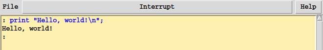
Unsurprisingly, this results in the interpreter echoing back “Hello, world!” However, print is commonly a statement, but fl, being a functional language, does not have statements - only expressions.
Since we know that all expressions have types, this begs the question: what is the type of print? We can find out by simply typing the function print without giving it an argument.
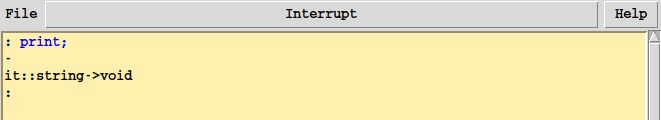
As we can see, print has the type string -> void; a function which takes a single argument of type string and returns a value of type void. While string is relatively self-explanatory, what is the meaning of void?
void is a singleton (i.e. inhabited by a single value) type, which is commonly returned from functions which only exist to perform effects. print is such a function, as it prints its argument to the user interface, and does nothing else.
As you have probably deduced from these examples, fl uses the semicolon (;) to denote the end of a top-level expression. This means that you can write long expressions, and even string literals, across multiple lines as long as you terminate the expression with a semicolon:
Expressions and Types
All fl programs consist of zero or more expressions, where each expression has a type. We’ve already seen the string and void types, and fl comes with a rich library of types right out of the box:
int: arbitrary precision integers;float/double: single and double precision floating point numbers;string: 8 bit ASCII strings;bool: Boolean functions encoded using binary decision diagrams;* list: lists where all elements have the same type*;* # ** # ...: tuples whose elements may have different types;* -> ** -> ... -> ***: functions from type*,**, etc. to***;- …and many more.
Arithmetic expressions behave as you would expect them to in any programming language:
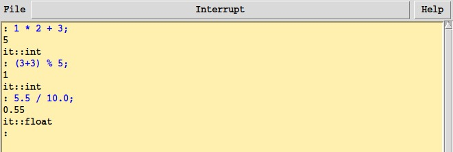
Lists are defined either as a comma-separated list of items enclosed in brackets, or by using the : (“cons”) operator on an element and another list. Tuples are defined as a comma-separated list of items, which may optionally be enclosed in parentheses.
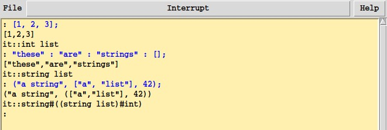
Constants and functions may be declared using the let keyword. For instance, we can define a constant zero and the successor function succ as follows:
As a functional language, fl lets you declare anonymous functions using lambda expressions. This can be very handy to, say, separate the traversal of some data structure from the operation performed on each element. Lambda expressions are of the form \var. expression, where var is the name of the function’s argument and expression is its body.
The following example uses the built-in function map to compute the square of each element of a list.
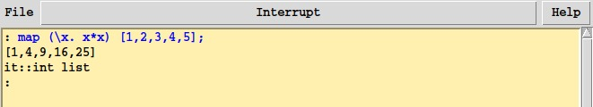
Sometimes we may want to create anonymous functions with more than one argument. When this is the case, we may simply nest lambda expressions:
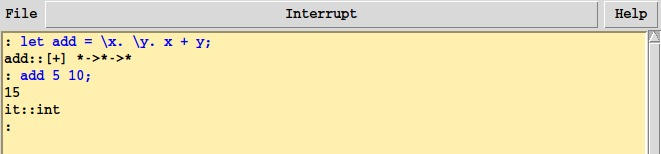
Functions may use pattern matching to case split on their arguments: when the function’s argument matches what’s found to the left of the =, return the expression to the right. For example, we can define the following rather sloppy function to convert an integer to a natural language representation in English.
Note the use of an underscore as the pattern of the "many" case at the end. An underscore or a variable name matches any value when used in a pattern. The only difference between the two is that using a variable in a pattern will bind the corresponding value to that variable on the right-hand side of the =, whereas an underscore will just match the value and not bind it.
Note the use of the /\ “legs” construct to introduce additional cases of the to_string function, and the semicolon terminating the final case.
It is important to remember that let-bindings are not recursive by default. Thus, the following attempt to write the factorial function fails miserably:
Instead, we must use the letrec keyword to define recursive functions:
While fl is statically typed, we have yet to see any type annotations. This is because fl implicitly infers the type of any expression we write. Numeric literals without decimals are assumed to be of type int, and literals with decimals are assumed to be of type float. Fl always tries infer the most general type for an expression, which means that we can, for instance, write a function to extract the first element of a tuple which works for all tuples:
However, sometimes we want to use more specific types, help the type checker infer our types by providing extra information, or just be explicit about the types of a function. In this case, we can use the :: type annotation operator on an expression, and enclose the annotated expression in curly braces:
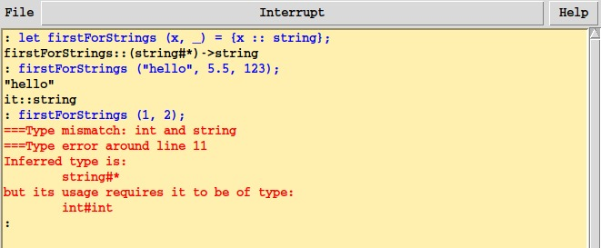
Note how the type of the function changes from (* # **) -> * to (string # *) -> string, and how we now get a type error if we try to apply the function to a tuple with a non-string first element.
We can also use type annotations in patterns, to the left of the =, or on a more complex expression rather than just an identifier:

fl employs lexical scoping. This means that a function which refers to some other identifier will keep referring to the identifier which was in scope at the time of definition, even if that identifier is later redefined. Consider this example, where two is overwritten, but the return value of the function addTwo which refers to it remains the same.
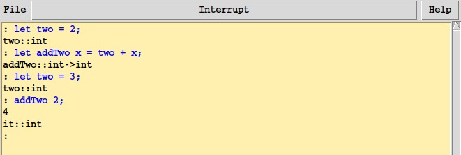
This is in contrast to dynamically scoped languages like Emacs Lisp, where functions instead use the version of the identifier in scope at the time of application.
Scripts
Expressions may be either typed into the interpreter directly, or stored in a script for later execution. Scripts typically have the .fl file extension, and can be loaded using the load function. To try it out, save the following program to a file named hello.fl:
print "Hello, World!\n";
print "This print brought to you by a .fl script!\n";When invoked from the interpreter, the load function looks for script files relative to the current working directory. When invoked from a script file, it will look for script files relative to the directory of the calling script.
Then, load it in the interpreter:
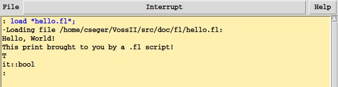
Loading a script will execute the file line by line, as though it were manually typed into the interpreter. This means that you can load a script twice (or more), and the whole file will be executed anew. This is handy when you’ve updated your script and want to make those changes visible to the interpreter. Note, however, that this is equivalent to redeclaring everything in the script. This can cause unpleasant side-effects if you’ve made changes to a type in your script, which some function defined in another script or interactively depends on.
Fl programs (scripts as well as those entered directly into the interpreter) may have comments, preceded by two slashes:
print "Hello, World!\n";
// Look at me, I'm a comment!
print "This print brought to you by a .fl script!\n";Comments begin with two slashes, and extend until the end of the line. It is worth reiterating, that comments placed before a constant of function definition will be picked up and displayed by the help system when viewing that entry, to properly documenting your code is highly recommended!
More About Types
In addition to the built-in ones, fl allows you to define your own data types using the lettype keyword. Each type consists of one or more data constructors which each have zero or more arguments. For instance, we can model a playing card using the following types:
A word of warning: while it is possible to redefine a previously declared type, any function referring to that type must also be defined anew, with the new type definition in scope.
The behavior of a function referring to a type which has been redefined is undefined!
Note how fl lists all of the new definitions introduced by the rank type declaration:
ace,king,queenandjack: the data constructors of the type, which can be used to create new values of the type and to match them in patterns.write_rank: an automatically generated function which writes its argument to a file. One such function is generated for each new type.read_rank: counterpart towrite_rank, this function reads arankback from a file previously created bywrite_rank.
After declaring our own data types, we can also pattern match on their data constructors. A constructor pattern takes the form of <constructor> arg1 arg2 .... As a concrete example, we may want to define a function which tells us whether the first of two card ranks is higher than the second one:
While not listed by fl, each new type also gets an automatically derived instance of the equality (==) and inequality (!=) operators. Thus, you can do things like ace == king or card spades jack != card clubs (numeric 1) without having to write any extra boilerplate!
We can also use the new_type_abbrev keyword to define type synonyms, for types which already exist but may have some particular semantics in our problem domain. We may want to, say, define a hand of cards as a list of cards:
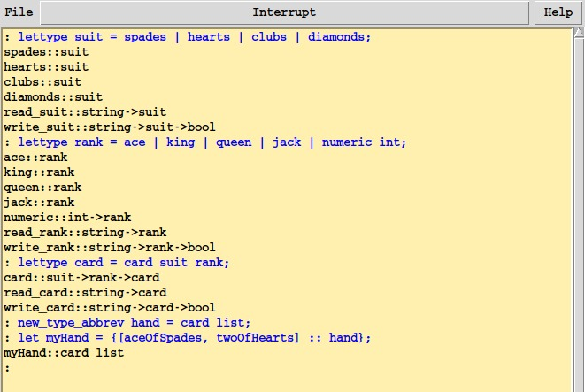
Booleans and Binary Decision Diagrams
Boolean expressions in fl are handled rather differently compared to other languages. Instead of being fixed values which are either true or false, boolean expressions are literally expressions, represented as ordered binary decision diagrams, or OBDDs.
As long as we are content with using expressions built from the atomic T and F constants (representing true and false respectively), Booleans behave as in any other language:
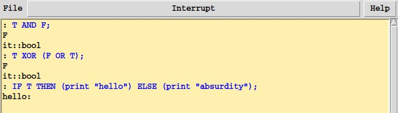
However, once we add variables - Boolean expressions with no well-defined value - into the mix, things start to get interesting. The following example defines a function which given a list of Boolean functions returns the Boolean function determining whether there is exactly one function in the given list that evaluates to T.
There is no connection between the string passed to the variable function and the identifier to the left of the equality sign. You could just as well write let x = variable "foo"; or variable "x" == variable "y";
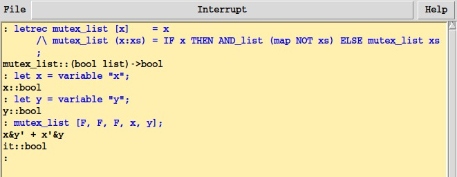
As we can see, the result of applying the mutex_list function is not merely a F or I don't know, maybe?, but the exact function that will satisfy the predicate described by mutex_list!
OBDDs efficiently represent Boolean functions in a canonical format, meaning that we can easily check whether two very different-looking boolean expressions encode the same function. In the following example, we verify that DeMorgan’s law - i.e. that the negation of a conjunction of two values is equivalent to the disjunction of the negations of those same values - holds for all values:
Note that both == and = can be used in Boolean expressions, but with different semantics: a == b means “are the expressions a and b literally the same Boolean function”, whereas a = b denotes the Boolean function which is true when a and b are equal.
Thus, variable "p" = variable "q" evaluates to (p ∧ q) ∨ (¬p ∧ ¬q) while variable "p" == variable "q" evaluates to ⊥.
As a more complicated example, let’s consider the problem of reachability in a state space: given a list of possible state transitions and a starting state s, is it possible to reach a given target state t? Modeling this problem in a conventional language can be troublesome: how do we represent the states and, above all, how do we explore the state space to figure out which states are connected?
In fl, we can model the state space as a list of named Boolean variables, and the transition table as a list of implication relations. If a transition is possible from state a to state b, then we say that that a implies b. We create a list of such transition relations and posit that each such Boolean term in the list is valid. Then, if the resulting logical conjunction trivially implies a transition relation from s to t, we know that s is reachable from t.
Thanks to Booleans being represented by OBDDs, both the creation of the reachability expression, and checking whether the resulting expression is valid, is relatively easy.
Fl supports fixity declarations for functions. In this example, infixr 5 implies means that the function implies is used as an infix function (similar to operators like +, AND, etc.), and is right-associative with priority 5. Other possible fixities are infixl (for left-associative infix functions), and postfix.
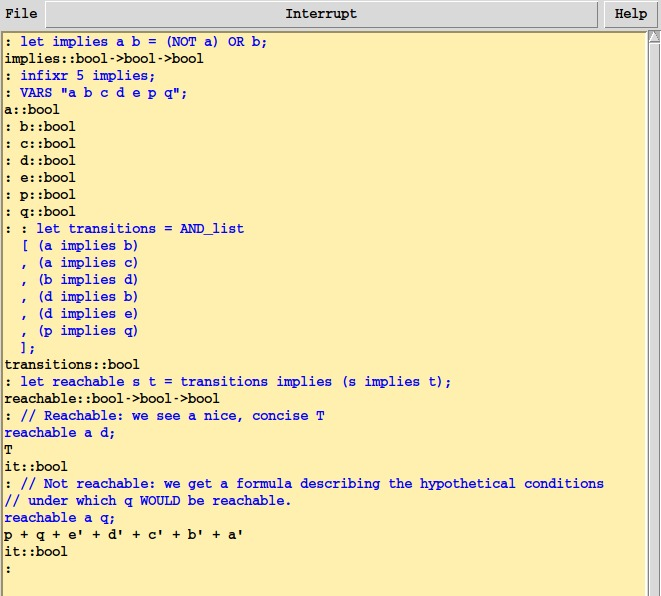
We can also quantify over variables. Either by introducing new, quantified, variables with the forall (!x. expr) and exists (?x. expr) operators, or by quantifying over some free variable in a Boolean expression using the Quant_forall and Quant_thereis functions. As an example of quantification, consider this alternative formulation of DeMorgan’s law:
To quantify over a some variable(s) in a pre-existing formula, we instead use the Quant_forall and Quant_thereis functions. For instance, note how the reachable function of our reachability example returns a nice, clear T when the goal state is reachable from the starting state, but returns a long Boolean formula when it is not. To make the output a bit more readable, we can quantify the expression over all variables used in the transition table.
The depends function takes a Boolean expression and returns the names of the variable upon which the expression depends, as a list of strings. Very handy in combination with Quant_forall and Quant_thereis!
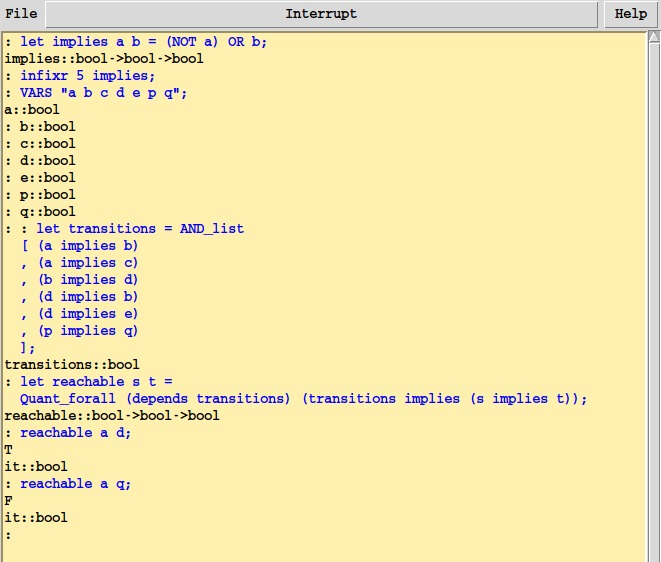
Visualising Circuits
As fl’s main purpose in life is to help you debug and visualise models of integrated circuits, it also comes with an embedded language to describe circuits and an easy to use visual symbolic simulator for circuits. While the description language and details of the simulator are not in the scope of this tutorial (see the fl user guide for that), we will demonstrate how to load and run simulations on a small Verilog circuit, to whet your appetite.
For this example we will use the following two Verilog files:
// File: small_lib.v
module mux2(
din_0, // Mux first input
din_1, // Mux Second input
sel, // Select input
mux_out // Mux output
);
//-----------Input Ports---------------
input din_0, din_1, sel ;
//-----------Output Ports---------------
output mux_out;
//------------Internal Variables--------
reg mux_out;
//-------------Code Starts Here---------
always @*
begin : MUX
case(sel)
1’b0 : mux_out = din_0;
1’b1 : mux_out = din_1;
endcase
end
endmodule// File: small.v
module mux4(
din_0, // Mux first input
din_1, // Mux Second input
din_2, // Mux Third input
din_3, // Mux Fourth input
sel, // Select input
mux_out // Mux output
);
//-----------Input Ports---------------
input din_0, din_1, din_2, din_3 ;
input [1:0] sel ;
//-----------Output Ports---------------
output mux_out;
//------------Internal Variables--------
reg mux_out;
reg mid01, mid23;
//-------------Code Starts Here---------
mux2 mux1 (.din_0(din_0), .din_1(din_1), .sel(sel[0]), .mux_out(mid01));
mux2 mux2 (.din_0(din_2), .din_1(din_3), .sel(sel[0]), .mux_out(mid23));
mux2 mux12 (.din_0(mid01), .din_1(mid23), .sel(sel[1]), .mux_out(mux_out));
endmoduleOnce we have created these files, we can first load fl’s Symbolic Trajectory Evaluation - STE for short - library, and then load the Verilog files into fl:
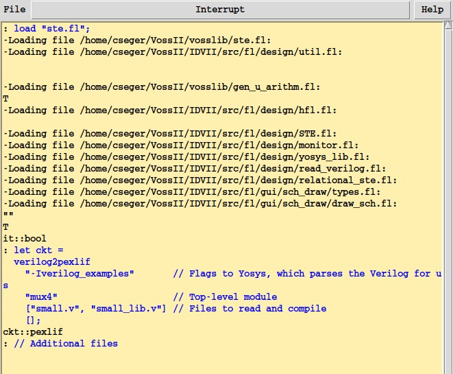
Then, to use the simulator, we need to first convert the pexlif circuit to an fsm, and load it into the simulator.
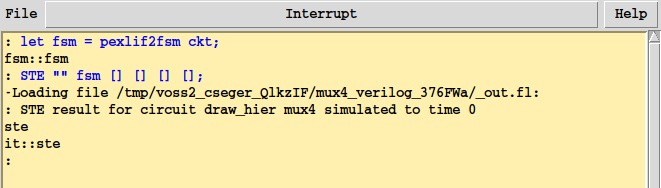
This will load your circuit into the simulator without running any actual simulations over it. You will still be able to inspect your circuit, but you will not be able to step through it clock for clock.
After doing this, you can launch the visualiser by running STE_debug fsm; in the interpreter. You will see a window that looks a lot like this:
To be able to step through your circuit clock for clock, track information flows through it, visualise state machines present in it, etc., you need to provide a list of clock for clock antecedents when calling the STE function. See the final chapter of the fl user guide for more information about how to do this.

Select the mux_out field in the list to the left, then click the Fanin button. This will take you to the fanin view of your circuit.

From here, you can inspect and play around with your circuit to your heart’s content; extremely handy for finding and diagnosing bugs in your circuits!
What Next?
Congratulations on completing this tutorial! Hopefully, you are now equipped to confidently find your way around the fl language and its interpreter.
What is your next step on your journey to VossII mastery? A few suggestions:
- learn more about the embedded hardware description language and how to use it to visualize, simulate and debug hardware descriptions;
- explore the functions available to you, either using the integrated help system or using the fl user guide;
- install and configure an editor integration; or
- learn how you can write and call high-performance Haskell programs from your fl programs.
Documentation about the hardware description language, visualization, and (almost) all of fl’s built-in functions can be found in the VossII user guide. You will find this guide in our release repository, or at doc/fl_guide.pdf in the VossII source or binary distribution.
More information about installing and configuring editor integrations is available from here, and the complete guide to using and building fl plugins in Haskell can be found here.